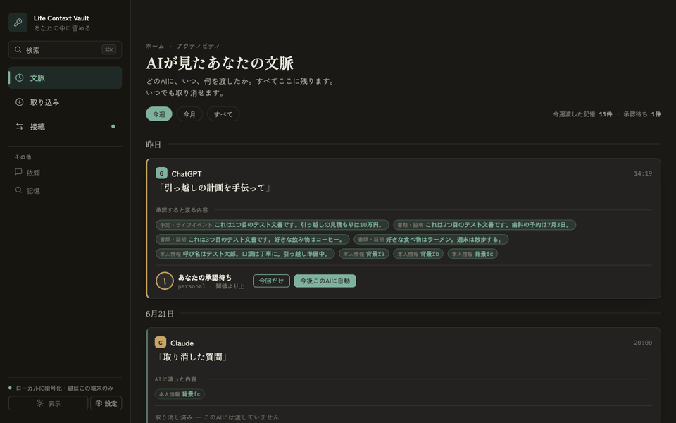

Local-first · Encrypted · MCP
AIに、人生を渡さずに
文脈を渡す。
Life Context Vault は、暗号化された個人の文脈をこの端末の中だけに保管し、AIには確認済みのContext Packだけを渡すローカルファーストのデスクトップアプリ。生のVaultも、元の資料も、承認していない候補も、AIには決して渡りません。

逆のトレードをする。
役に立つAIには、あなたの文脈が要る。けれど従来のやり方は割に合わない ── チャット欄に人生を貼り付けて行方を見失うか、メール・ファイル・履歴への包括アクセスを渡して祈るか。どちらもタスクに必要な以上を漏らし、何を共有したか見ることも取り消すこともできない。
入力はあなたが選ぶキュレートされた取り込み
手入力・ファイルアップロード・オプトインのブラウザ取り込みのみ。メールやカレンダー、閲覧履歴をバックグラウンドで吸い上げることはしません。
出力は確認済みだけContext Pack
要求ごとに関連する承認済みの記憶をランク付けし、送る内容をあなたに提示。ポリシーを満たし（確認が要るものは確認するまで）何も送りません。
秘密は出ていけないsecret_never_send
最も機微なものはそもそも承認済みの記憶になれず、Packにも入れません。設定ではなくコードで強制します。
境界はコードで、二重に強制される。
記憶候補が承認済みの記憶になるのは明示的な操作を経たときだけ。そしてすべてのContext Packは、作った時点ではなく取得の瞬間に、現在のポリシーで再検証されます。
RawSource → 候補 (UNTRUSTED) → あなたが承認 → ApprovedFact (canonical) │ audit ← Context Pack ← rank + filter ← (現在のポリシーで再検証) │ あなたが確認 → AI クライアント
渡した先には理由だけ
AIが受け取るペイロードは、除外項目を「理由」だけに絞ります。何が伏せられたかをAIが知ることはありません。
一つのコアで一箇所に
デスクトップアプリもMCPサイドカーも同じ *_at_path コアを呼ぶので、境界はちょうど一箇所に存在します。
中身
- ローカルファースト＆暗号化。状態はSQLCipher暗号化SQLiteに保存。鍵はOSの資格情報ストア（macOS Keychain）。製品自身のネットワーク送信はゼロ。
- 感度ティアと接続ごとのポリシー。記憶は public 〜 secret_never_send に階層化。接続ごとに上限・ドメイン許可・「このAIを信頼」モード。
- 製品級の検索。正規化SQLite射影テーブル＋ネイティブFTS。10万ファクト/50万チャンクでベンチ済み。
- 開かれた標準。ローカルMCP stdio サイドカーが、同一端末のMCPクライアントに最小限のツール面を公開。
- すべて監査・取消可能。取り込み元・候補・要求・Pack・配信は監査台帳に。Packは10分で失効し、ポリシー強化や記憶の編集/非表示は遡って無効化。
- Claude Desktop 連携。「Claude設定へ追加」ボタンで
life-context-vaultMCPサーバーを設定にマージ（既存設定はバックアップ）。
動かす
デスクトップ優先。AIアクセス・暗号化ネイティブ永続化・ローカルMCPはTauriアプリで。
# フル機能のデスクトップアプリ npm install npm run tauri:dev # ローカルMCPサイドカーをビルド → アプリの「接続」から追加 npm run mcp:build
早期版（0.1.0）。トラスト境界とその強制は実装済みで、RustコアとTypeScriptフォールバックの両方でテスト済みです。MIT UIは日本語ファースト